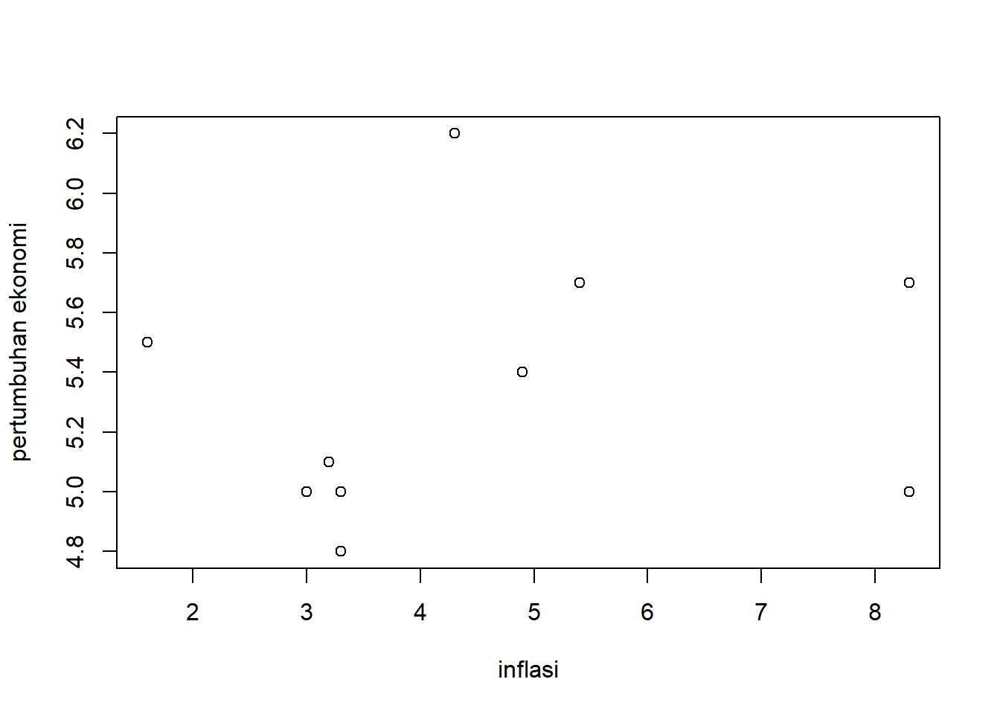
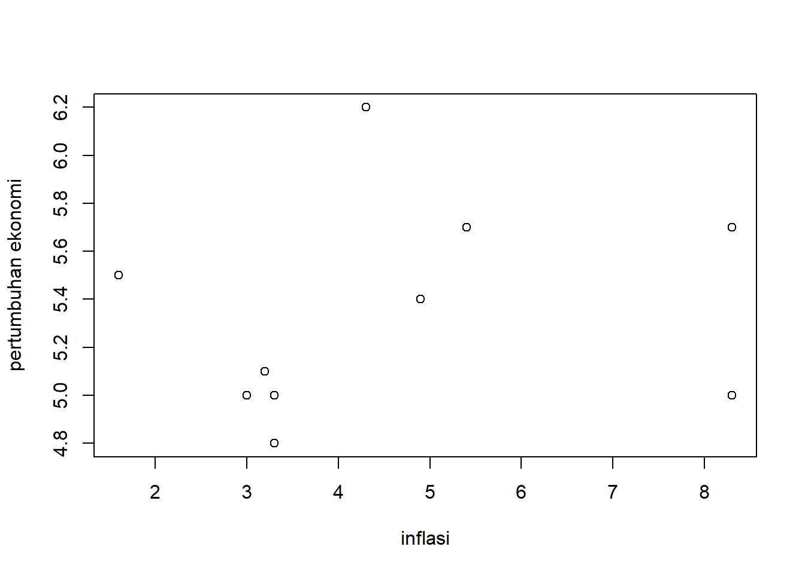

library(readxl)
dat<-read_excel("inflasi.xlsx")
plot(dat$X,dat$Y,xlab="inflasi",ylab="pertumbuhan ekonomi")

Jian Maulia J (210203777)
PIWAR 3D
Apa itu inflasi?, Inflasi merupakan suatu proses meningkatnya harga-harga secara umum dan terus-menerus, kenaikan harga dari satu atau dua barang saja tidak dapat disebut inflasi kecuali bila kenaikan itu meluas pada barang lainnya, atau menurunnya nilai uang kertas terhadap mata uang asing karena banyaknya dan cepatnya uang kertas beredar.Inflasi sendiri biasa disebabkan oleh banyaknya jumlah uang yang beredar dan seiring berjalannya waktu akan naik dua kali lipat maka harga juga akan naik dua kali lipat. Penambahan jumlah uang yang beredar dapat terjadi misalnya kalau pemerintah memakai sistem anggaran defisit, menurut data yang diolah oleh bola salju ,

Selama 20 tahun ini indonesia telah mengalami akumulasi nilai inflasi sebesar 200,45% dalam kurun waktu 20 tahun dan 5,84% per tahunnya.
Sementara itu Pertumbuhan ekonomi sendiri merupakan peningkatan dalam kemampuan dari suatu perekonomian dalam memproduksi barang dan jasa. yang artinya jika suatu negara memiliki pertumbuhan ekonomi yang begitu cepat tingkat produksi barang dan jasanya pun akan ikut meningkat, begitu pula dengan konsumsi masyarakatnya dengan secara otomatis akan menikan GDP mereka sedikit demi sedikit seiring dengannya meingkatnya pertumbuhan ekonomi.
Batasan masalah kali ini terfokus pada pengaruh inflasi terhadap pertumbuhan ekonomi dan sebaliknya dari dua variabel terkait. untuk menghindari luasnya topik bahasan yang nanti akan dilakukan serta agar pembaca tidak merasa bingung tentang arah bahasan yang saya lakukan.
Dari latar belakang yang sudah diuraikan di atas kita dapat melihat 2 rumusan masalah, antara lain:
Makalah ini dibuat dengan tujuan untuk memenuhi kewajiban saya sebagai mahasiswa untuk mata kuliah Metodologi Penelitian,yang diampu oleh bapak “imed” & ibu “tere’ selama periode 2022/2023 atau saat semester ganjil pada angkatan kedua di Politeknik APP Jakarta. dan juga agar para pembaca seperti masayarakat umum dan mahasiswa dapat terbantu dengan adanya makalah ini dan bisa menjadi acuan untuk membuat makalah lainnya.
Manfaat dari penelitian ini sendiri adalah memberikan informasi terhadap pembaca di luar sana yang tidak sempat mencari data secara spesifik atau tidak memiliki waktu luang untuk mendengarkan berita serta makalah ini bermanfaat untuk mnambah wawasan para pembaca dengan pembahasaan yang tidak terlalu rumit dan dengan penyampaian yang informal.
Dari yang kita tahun indonesia sendiri Inflasi adalah suatu gejala dimana tingkat harga umum mengalami kenaikan secara terus menerus. Kenaikan harga dari satu dua barang saja tidak dapat disebut inflasi, kecuali bila kenaikan tersebut meluas kepada (atau mengakibatkan kenaikan) sebagian besar dari harga barang-barang lain (Boediono, 2014:161). Inflasi adalah naiknya harga harga komoditi secara umum yang disebabkan oleh tidak sinkronnya antara program pengadaan komoditi (produksi, penentuan harga, pencetakan uang, dan sebagainya) dengan tingkat pendapatan yang dimiliki oleh masyarakat (Putong, 2013:147).
Pertumbuhan ekonomi Bagi suatu negara, pertumbuhan ekonomi menjadi salah satu fokus yang harus dicapai di setiap tahunnya. Angka pertumbuhan ekonomi di suatu negara akan menjadi salah satu tolak ukur keberhasilan. Hal tersebut juga menjadi salah satu fokus bagi negara Indonesia. Menurut M. Suparko dan Maria R. Suparko ada beberapa macam alat yang dapat digunakan untuk mengukur pertumbuhan ekonomi yaitu :
a. Produk Domestik Bruto
PDB adalah jumlah barang dan jasa akhir yang dihasilkan dalam harga pasar. Kelemahan PDB sebagai ukuran pertumbuhan ekonomi adalah sifatnya yang global dan tidak mencerminkan kesejahteraan penduduk.
b. PDB per Kapita atau Pendapatan Perkapita
PDB per kapita merupakan ukuran yang lebih tepat karean telah memperhitungkan jumlah penduduk. Jadi ukuran pendapatn perkapita dapat diketahui dengan membagi PDB dengan jumlah penduduk.
c. Pendapatan Per jam Kerja
Suatu negara dapat dikatakan lebih maju dibandingkan negara lain bila mempunyai tingkat pendapatan atau upah per jam kerja yang lebih tinggi daripada upah per jam kerja di negara lain untuk jenis pekerjaan yang sama.
Pada penelitian ini penulis akan melakukan penelitian dengan alat bantu yaitu Rstudio dan R serta dengan bahan yang didapat dari sumber yang dipercaya seperti BPS dan Bank Indoneisa, materi dan alur penelitian dibuat dengan sistematis sehingga dapat menjadi acuan untuk memecahkan masalah.

Data yang diambil ini sudah diformat ke dalam excel dan agar lebih mudah dibaca dan kedua variabel tersebut merupakan data inflasi (X) dari tahun 2012(tabel no 1) sampai 2022(tabel no 11), jika dilihat data inflasi selama 10 tahun tersebut bisa dibilang cukup fluktuatif, dan tidak terlalu stabil, kestabilan tersebut hanya dapat bertahan beberapa tahun saja sampai kemudian inflasi terbeut naik atau turun kembali, sejauh yang bisa kita lihat bahwa pada tahun 2013 dan 2014 (tabel no 2 dan 3 ), memiliki persentase yang paling tinggi, sementara inflasi yang paling rendah yaitu pada tahun 2020 yang hanya 1,6% saja. Sementara untuk pertumbuhan ekonomi sendiri jika kita melihat dari tabel di atas, pertumbuhan ekonomi indonsia secara year on year jelas tidak terlalu fluktuatif dan bisa dibilang cukup stabil, namun jika pertumbuhan ekonomi indoneisa hanya sebatas itu negara indonesia akan tertinggal dengan negara berkembang lainnya di wilayah ASEAN.
Metode analisi yang digunakan adalah kuantitatif , metode ini sendiri berfokus pada pengolahan data dari berbagai sumber di internet seperti BPS dan Bank Indonesia agar mendapatkan data yang akurat dalam format data persentase untuk kedua variabel yang dikaji agar lebih mudah untuk di plotting dan penelitian ini dibantu dengan R dan R studio dengan beberapa package yang digunakan seperti tidyverse,readxl,WDI,dan kableExtra. package ini sendiri memiliki fungsi untuk membantu user untuk melakukan plot dan regresi dan model yang digunakan hanya plotting biasa agar pembaca dapat memahami tabel plot tersebut.
Dari data inflasi dan pertumbuhan ekonomi yang sudah diformat sesederhana mungkin, kita bisa melihat bahwa nilai inflasi yang terjadi tiap tahunnya yang begitu fluktuatif tidak memberikan dampak yang signifikan terhadap pertumbuhan ekonomi itu sendiri, mengapa begitu?, padalnya mau serendah ataupun setinggi apapun persentase inflasi pada tahun tersebut nilai pertumbuhan ekonomi tidak menurun lebih dari 4.8% dan tidak lebih tinggi dari 6.2% sekalipun saat itu inflasi sedang tinggi-tinginya yang mungkin bisa menyebabkan melemahnya mata uang di indonesia dan menyebabkan kurva permintaan menurun.
Pada gambar di bawah kita bisa melihat Rplot yang dimana X berlaku sebagai nilai inflasinya dan Y berlaku sebagai nilai pertumbuhan ekonomi.
library(readxl)
dat<-read_excel("inflasi.xlsx")
plot(dat$X,dat$Y,xlab="inflasi",ylab="pertumbuhan ekonomi")
library(readxl)
dat<-read_excel("inflasi.xlsx")
reg<-lm(Y~X,data=dat)
summary(reg)
Call:
lm(formula = Y ~ X, data = dat)
Residuals:
Min 1Q Median 3Q Max
-0.4854 -0.2515 -0.1538 0.2667 0.8963
Coefficients:
Estimate Std. Error t value Pr(>|t|)
(Intercept) 5.10842 0.31128 16.411 5.15e-08 ***
X 0.04542 0.06378 0.712 0.494
---
Signif. codes: 0 '***' 0.001 '**' 0.01 '*' 0.05 '.' 0.1 ' ' 1
Residual standard error: 0.4386 on 9 degrees of freedom
Multiple R-squared: 0.05334, Adjusted R-squared: -0.05184
F-statistic: 0.5071 on 1 and 9 DF, p-value: 0.4944dapat dilihat dari hasil regresi di atas bahwa nilai estimasi standar inflasi adalah 0.04542, ini berarti jika inflasi ingin naik 1% maka standar estimasi nya menyatakan bahwa setiap akan ada kenaikan atau penurunan inflasi akan menurun atau naik sebesar 0.04542 per kenaikan. dan residual of freedom nya hanya 0.4386 ini menandakan nilai ini moderat, ridak kuat dan tidak lemah
Dari hasil penelitian ini dapat disimpulkan bahwa, baik inflasi tersebut turun secara signifikan atau naik secara signifikan, tidak akan terlalu mempengaruhi nilai pertumbuhan ekonomi karena masih banyak faktor pendukung lain yang mempengaruhi perteumbuhan ekonomi tersebut
Ardiansyah, H. (2017). PENGARUHsINFLASI TERHADAP PERTUMBUHANnEKONOMI DIyINDONESIA.
Br Simanungkalit, E. F. (2020). PENGARUH INFLASI TERHADAP PERTUMBUHAN EKONOMI DI INDONESIA. JOURNAL OF MANAGEMENT .
Salim, A., Purnama sari, A., & Fadilla, F. (2021). Pengaruh Inflasi Terhadap Pertumbuhan Ekonomi Indonesia. Ekonomica Sharia: Jurnal Pemikiran Dan Pengembangan Ekonomi Syariah.